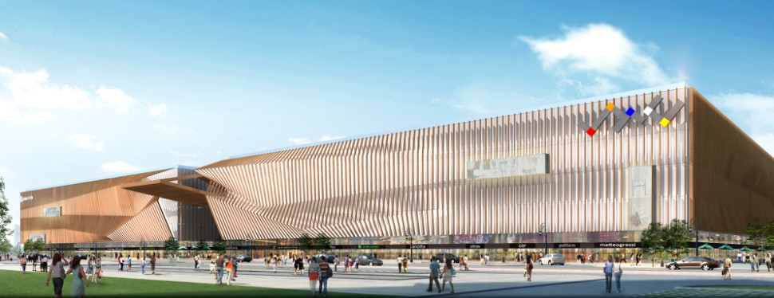

好百年是国内知名的家居连锁集团，创立于1997年，植根深圳，服务全国。旗下拥有两大家居零售品牌—HOBA好百年家居、METEN美庭家居，同时布局建材、灯饰等多种家居商业模式，截止2012年底，好百年已在深圳、上海、成都、长沙、福州、中山、珠海、南宁、九江等国内大中城市开设了十余家大型家居连锁商场。
华南城•南宁好百年国际家居建材博览中心是好百年集团与华南城集团强强联手后的首个战略项目，建筑面积达38万平方米，是西南地区规模最大、品类最全、品牌最多、档次最高的泛家居购物中心。其经营范围覆盖家具、建材、装饰、软装、整体家装、厨卫电器等居家生活全领域产品，兼顾休闲健身、餐饮娱乐、商务社交等多元化业态，形成以经营高档名牌家具建材为主、以休闲娱乐为带动力的中国第一家居家生活综合体。
华南城•南宁好百年国际家居建材博览中心具备独创的BBEEC商业模式，即居家产业商贸物流基地（Business Logistics Base）、居家产业品牌旗舰基地（Brand Flagship Base）、产业博览会（Exhibition）、腾讯合作O2O电子商务（The O2O Electronic Commerce）、居家生活综合体（Home Life Complex）五大商业模式，同时还拥有完善的生活休闲配套、综合性会展中心配套、完善的仓储物流配套、完善的金融服务配套和华南城巨大的经济商圈等核心优势，势必全面引爆泛家居风潮，铿锵奏响家居行业的最强音。